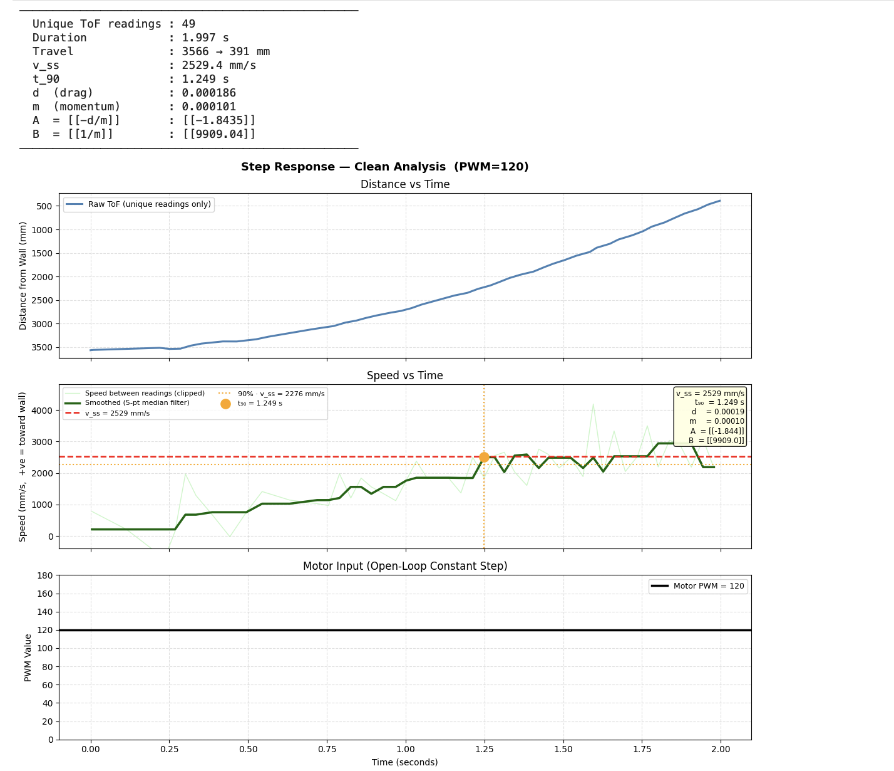
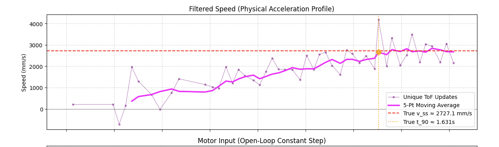
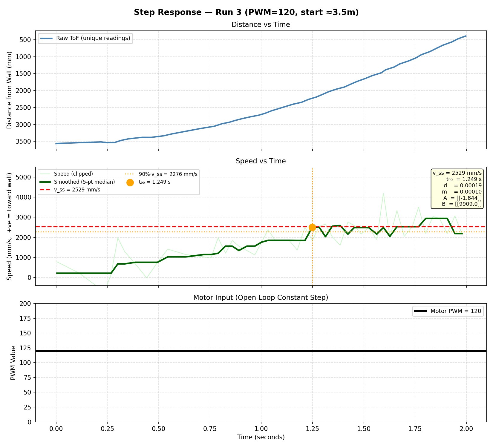
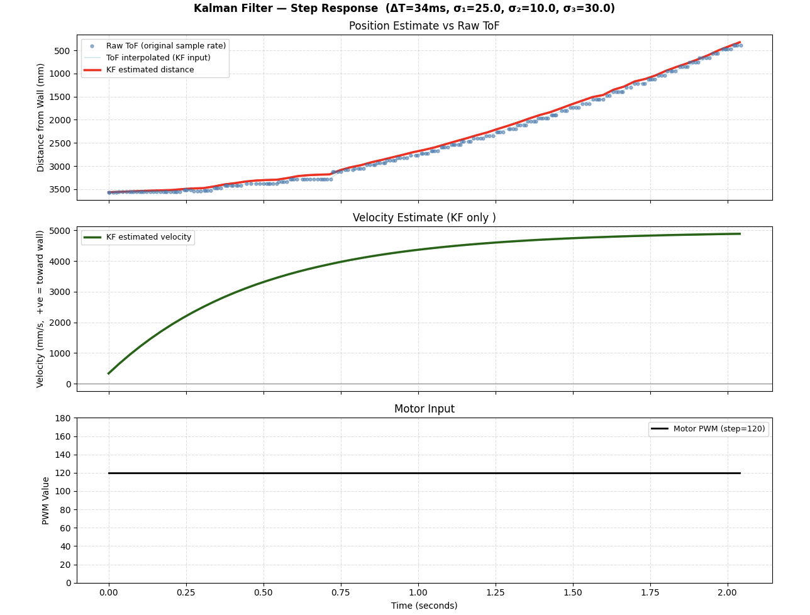
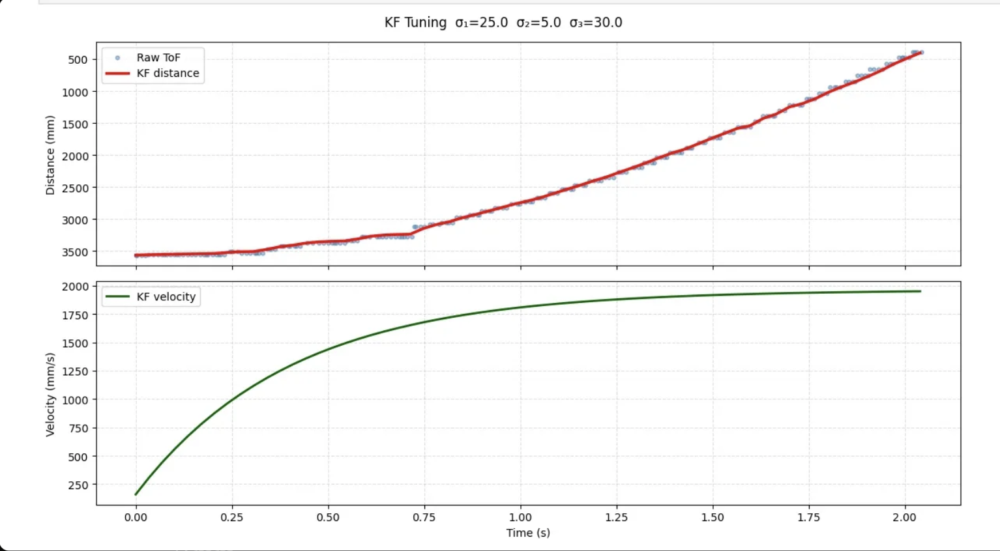
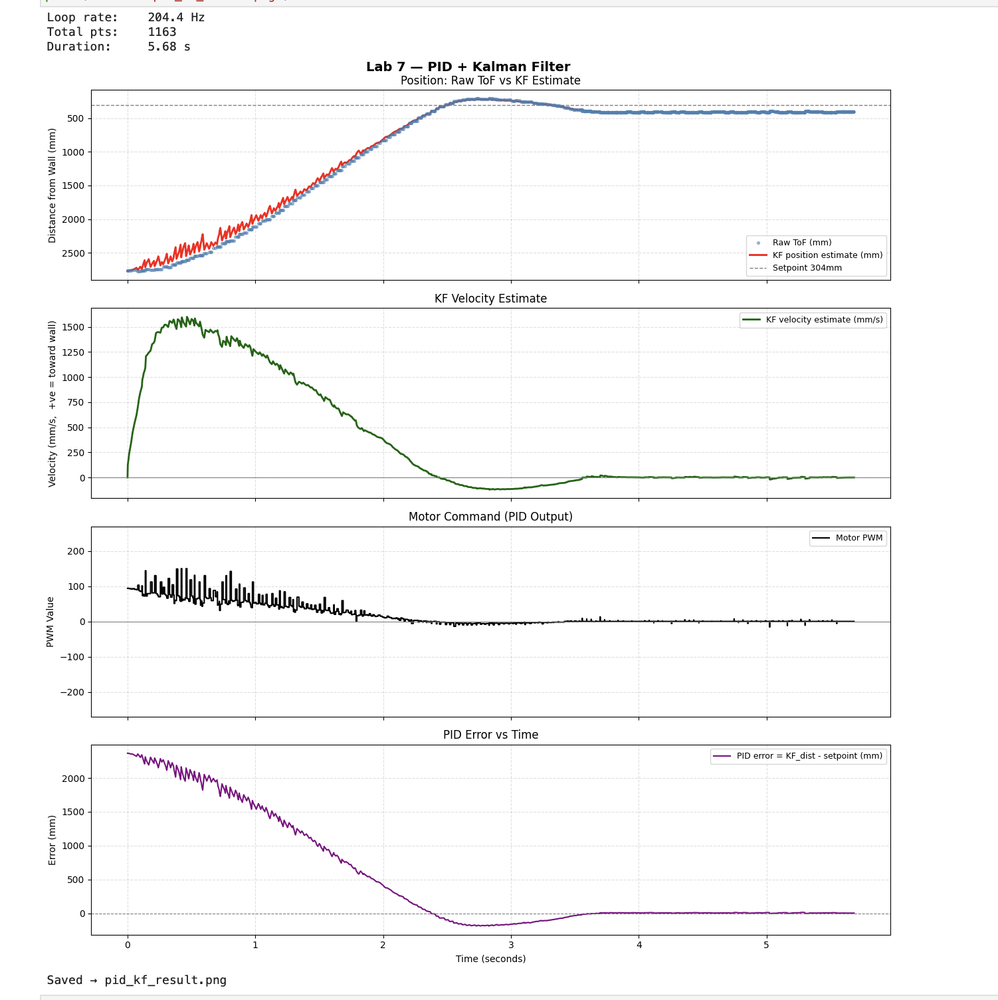
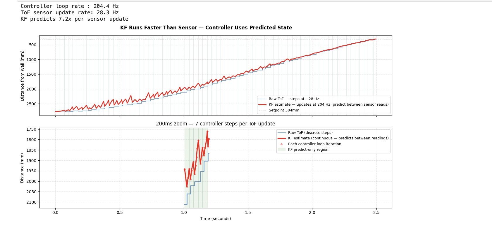

1. Objective
The goal of this lab was to build a Kalman Filter (KF) for the robot's position estimation and integrate it into the existing PID position controller from Lab 5. The KF replaces the linear extrapolation used previously, providing a physically-grounded state estimate that runs at the full controller loop rate (~204 Hz) rather than being limited to the ToF sensor update rate (~27 Hz).
2. Step 1: Estimating Drag and Momentum
Before building the KF, the system's physical parameters — drag d and momentum m — needed to be estimated from real robot data. This was done using an open-loop step response: the robot was driven toward a wall at a constant PWM=120 while logging ToF distance at ~27 Hz.
Three runs were attempted. Run 1 started ~4m from the wall and was unusable — the ToF sensor saturated at its long-mode ceiling (~3975mm) for the entire acceleration phase, so no valid speed data was captured. Run 2 (start ~2.7m) and Run 3 (start ~3.5m) both produced usable data, with Run 3 being cleaner since the robot had more room to accelerate toward steady state.
A key data processing issue was identified: the Arduino loop runs at ~100 Hz but the ToF sensor only updates at ~27 Hz, so ~75% of logged rows were duplicate distance values. Feeding these into np.gradient created large artificial speed spikes. The fix was to deduplicate — computing speed only between rows where distance actually changed — then applying a 5-point median filter and clipping outliers beyond 3×IQR from the median.

Figure 1: Step response Run 3 with 90% rise time annotated (~1.25s). Used to extract steady-state speed and rise-time for drag/momentum estimation.

Figure 2: Computed speed after deduplication and 5-point median filter. Artificial spikes from duplicate ToF readings are suppressed.

Figure 3: Clean step response (Run 3). Distance (top) and filtered speed (bottom) vs time. Steady-state speed ≈ 2529 mm/s.
From Run 3, steady-state speed was measured as ~2529 mm/s and 90% rise time as ~1.25s. Averaged across Run 2 and Run 3:
| Parameter | Value |
|---|---|
| d (drag) | 0.000200 |
| m (momentum) | 0.000101 |
3. Step 2: Building and Tuning the KF in Python
With d and m estimated, the state-space model was constructed and discretised at ΔT = 34ms (matching the ToF update period):
Delta_T = 0.034 # seconds
A = np.array([[0, 1 ],
[0, -d/m ]])
B = np.array([[0 ],
[1/m ]])
Ad = np.eye(2) + Delta_T * A
Bd = Delta_T * B
C = np.array([[-1, 0]]) # measure negative position (distance = -x[0])The state vector is x = [position, velocity]ᵀ where position is the negative distance from the wall. C = [-1, 0] because the ToF measures positive distance, which equals -x[0].
Noise covariances were tuned iteratively. The critical discovery during tuning was a unit inconsistency: d and m were estimated with u = PWM/255 (absolute normalisation), but the KF was initially being fed u = PWM/STEP_PWM = 1.0, effectively doubling the modelled thrust and pushing the estimated terminal velocity to ~5000 mm/s. Correcting to u = PWM/255.0 immediately brought the velocity estimate in line with the measured ~2500 mm/s.
Final noise parameters:
sigma_1 = 25.0 # position process noise (mm)
sigma_2 = 5.0 # velocity process noise (mm/s)
sigma_3 = 30.0 # ToF sensor noise (mm)
Figure 4: KF Python tuning — KF distance estimate tracking raw ToF. Velocity estimate converges to ~1950 mm/s.

Figure 5: Full KF tuning run. KF position (blue) tracks raw ToF cleanly; velocity estimate (red) is smooth and physically consistent.
4. Step 3: Integrating KF into the Arduino PID Controller
The KF was ported to the Artemis using the BasicLinearAlgebra library. The linear extrapolation from Lab 5 was removed entirely — the KF predict step handles inter-reading position estimation, which is more physically principled. The key architectural change is that the KF runs two modes every loop iteration:
- Predict-only (~204 Hz): advances the state using the physics model and last motor command.
- Predict + Update (~27 Hz): incorporates a fresh ToF reading when one is available.
// Predict every loop; update only when ToF fires
kf_step(u_norm, (float)tof_last, tof_updated);
float dist_kf = kf_distance(); // fed to PID instead of extrapolated distance5. Step 4: PID Tuning with KF
Initial runs with the Lab 5 gains (Kp=0.08, Ki=0.002, Kd=1.5) caused the robot to hit the wall at ~3200 mm/s. The KF's smoother position estimate meant the D term was no longer damping sensor noise — it was reacting to real velocity, requiring retuning.
The braking zones were tightened to start acting earlier:
if (dist_kf < 2000) p_out = min(p_out, 150.0f);
if (dist_kf < 1200) p_out = min(p_out, 100.0f);
if (dist_kf < 700) p_out = min(p_out, 50.0f);
if (dist_kf < 400) p_out = min(p_out, 30.0f);Final tuned gains: Kp=0.04, Ki=0.001, Kd=2.5, SP=304mm. The robot approaches at ~1550 mm/s, decelerates smoothly, and parks at the setpoint with no overshoot.

Figure 6: Final PID+KF run. The KF estimate (blue) guides the controller smoothly to the 304mm setpoint with no overshoot.
Video 1: Robot driving to wall and parking at 304mm setpoint using Kalman Filter-guided PID.
6. Step 5: Demonstrating KF Runs Faster Than the Sensor

Figure 7: KF vs ToF rate comparison. Top: raw ToF (staircase) vs KF estimate (smooth continuous line). Bottom: 200ms zoom showing ~7 controller iterations per sensor update, with predict-only intervals shaded.
The plot above demonstrates the core KF advantage. The controller loop runs at 204.4 Hz while the ToF sensor updates at 28.3 Hz — a 7.2× difference. The top panel shows raw ToF as a staircase (flat between sensor firings) vs the KF estimate as a smooth continuous line. The bottom panel zooms into a 200ms window, showing ~7 controller iterations per sensor update with the predict-only intervals shaded. Without the KF, the PID would use stale position data for up to 37ms between updates. With the KF, it receives a fresh state estimate every ~5ms.
7. Results Summary
| Parameter | Value |
|---|---|
| Controller loop rate | 204.4 Hz |
| ToF sensor rate | 28.3 Hz |
| KF speedup factor | 7.2× |
| Final gains | Kp=0.04, Ki=0.001, Kd=2.5 |
| Setpoint | 304 mm |
| Peak approach speed | ~1550 mm/s |
| Steady-state error | ~0 mm |
AI Usage: AI was used in this lab for cross-checking calculations, comparing CSV data across runs, and tuning the filter. Speed was essential.